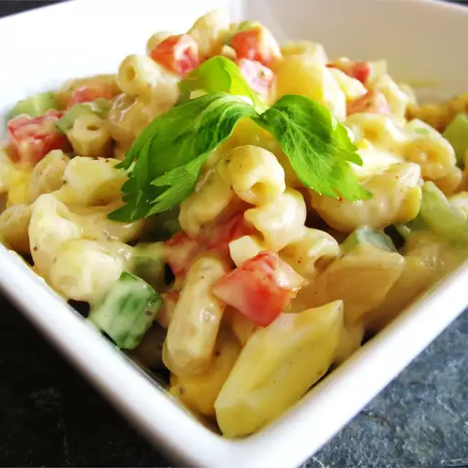

Amish Macaroni Salad

Description
This Amish macaroni salad is a colorful and flavorful dish made with hard-cooked eggs, bell pepper, and celery in a creamy dressing. Best macaroni salad I have ever had. I always get many requests for the recipe. Enjoy!
Ingredients
- 2 cups uncooked elbow macaroni
- 3 large hard-cooked eggs, chopped
- 1 small onion, chopped
- 3 stalks celery, chopped
- Lazy
Steps
- Bring a large pot of lightly salted water to a boil. Cook elbow macaroni in boiling water, stirring occasionally, until tender yet firm to the bite, about 8 minutes. Drain and set aside to cool.
- Combine eggs, onion, celery, bell pepper, and relish in a large bowl. Stir together salad dressing, sugar, mustard, vinegar, celery seed, and salt in a small bowl. Pour over eggs and vegetables. Top with cooled macaroni; stir until well combined. Cover and chill in the refrigerator for at least 1 hour before serving.
Home